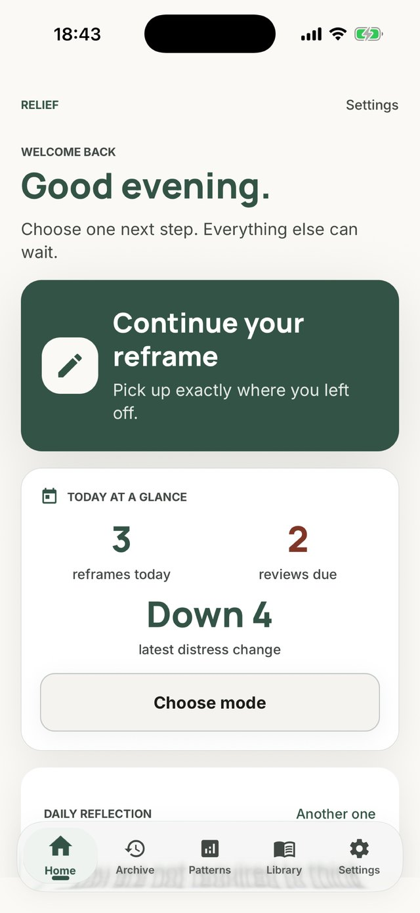
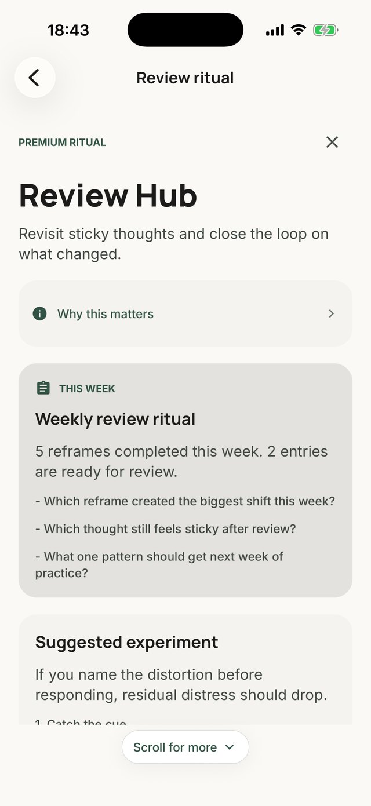
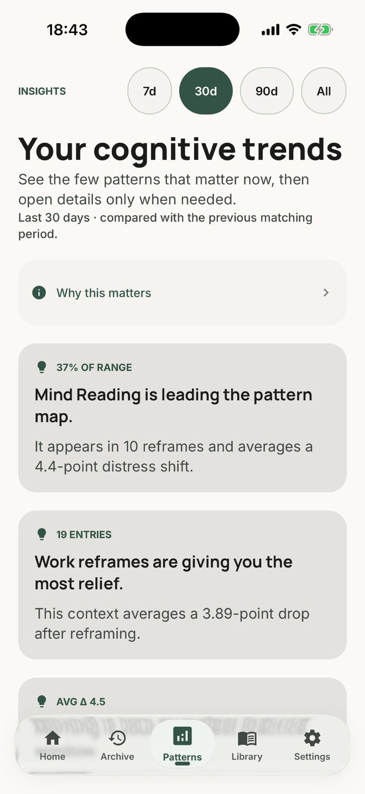
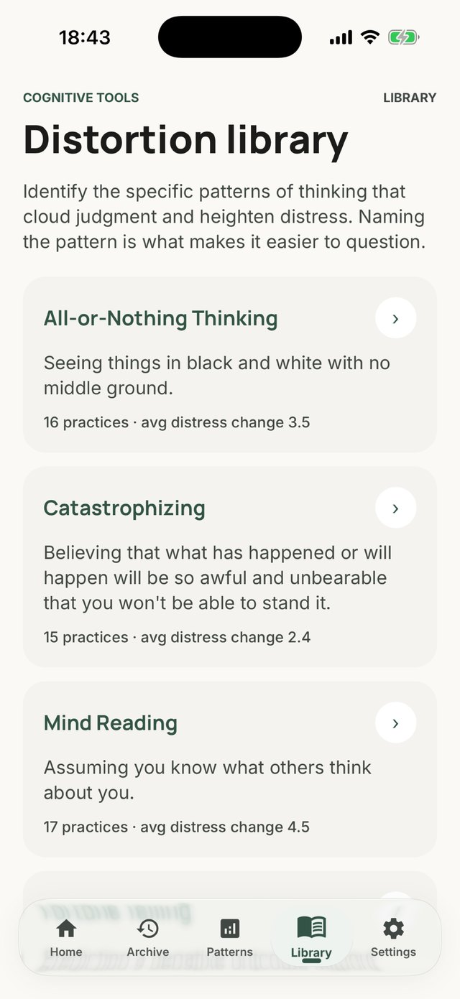

Everything here is checkable. If you need something that is not on this page,
ask and it will be sent or added.
In one line
Relief is a private CBT thought record for iPhone — with no AI, no
account and no server.
In a paragraph
When a thought will not put itself down, Relief walks through the cognitive behavioural
therapy exercise for it: write the automatic thought and rate how distressing it feels, name
the cognitive distortion behind it, weigh the evidence for and against, write a more
balanced version, then rate the distress again. There is no chatbot and no generated
reframe, deliberately — in a thought record the useful part is that you have to find
the counter-evidence yourself. Entries are encrypted on the device and there is no server to
send them to.
Facts
Name: Relief — CBT Reframing Tool
Platform: iPhone and iPad, iOS 15.1 and later
Version: 1.2.0, released 15 August 2026
Price: Free to download. Five complete reframes every three months
without paying, with no account and no card. A subscription removes the limit and adds
summaries of recurring distortions.
Never behind the subscription: the personal safety plan, crisis
resources, the passcode and Face ID app lock, and full JSON export.
Languages: English, Spanish (Spain and Latin America), French, German,
Italian, Brazilian Portuguese, Ukrainian, Japanese, Korean — the app itself, not only
the store listing.
No AI and no chatbot. There is no language model in the app. The
project has no LLM dependencies, and the entire codebase makes exactly one outbound
network request — optional analytics, switched off in the shipping build.
No account and no sign-up. Nothing to create, nothing to verify.
Verifiable. Because the claims are about network behaviour, they can be checked without the source: how to check what Relief sends.
No cloud. Entries live in a database on the phone. The free-text fields
are encrypted with AES-GCM and the key is held in the device keychain. The app works with
no connection at all.
No mood tracking, no meditation, no streaks, no feed. It does one
technique.
Deleting means deleting. Erasing removes entries, edit history,
attached photos and voice notes, and rewrites the database file rather than leaving the
deleted text recoverable in freed pages.
Screenshots
Unretouched captures from the shipping build. Free to use when writing about
Relief. Higher resolution or other languages on request.

Home

The reframe flow

Patterns

Distortion library
Angles that are actually true
The case against AI for this specific exercise. Automating the reframe
removes the part of a thought record that does the work.
Privacy as architecture rather than policy. There is no server, so
there is nothing to promise about what happens to your data on one.
Localisation depth. Nine languages beyond English, through every
screen, notification, export and accessibility label.
A solo-built app in a category dominated by funded chatbots.
Relief has been on the App Store since 30 July 2026 and has no ratings yet.
There are no download figures to quote and none will be invented.